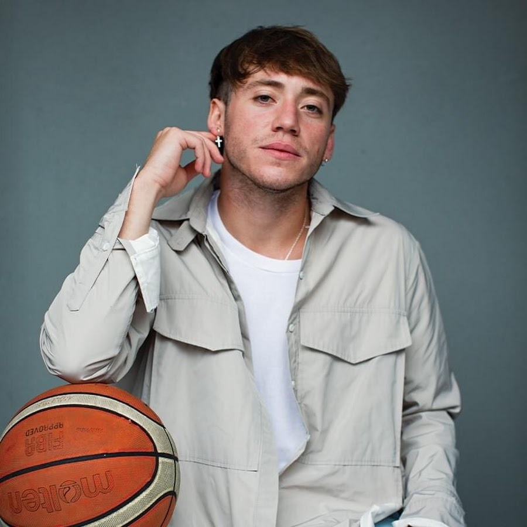
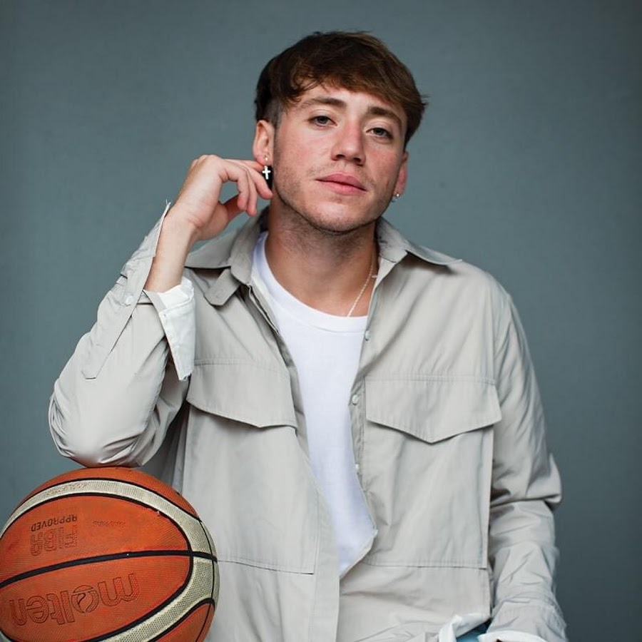
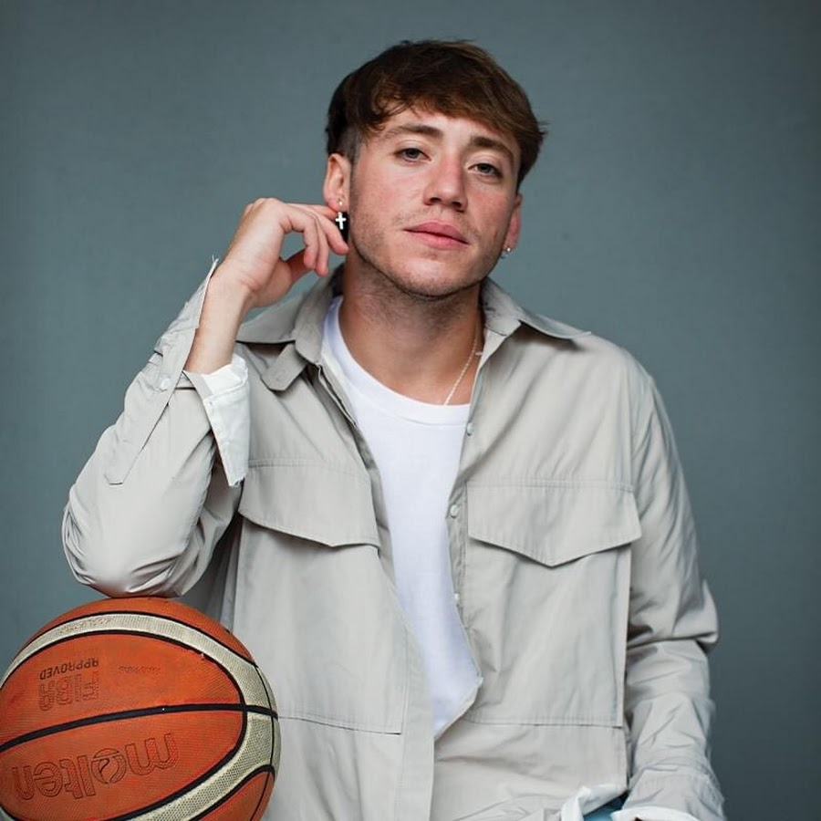
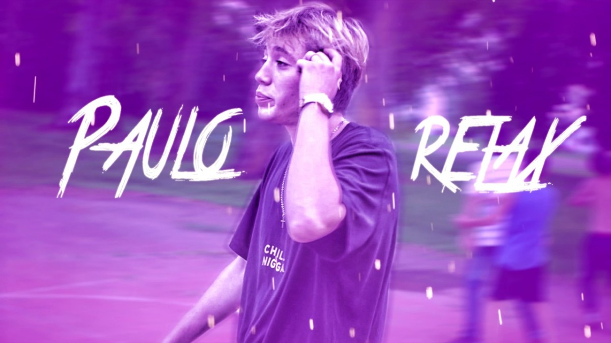

Paulo Londra es un conocido cantante argentino, surgió de las competencias de freestyle, como El Quinto Escalón, allí fue donde empezó a ganar reconocimiento. En 2017 lanzó su primer single, "Relax". Posteriormente comenzó a trabajar con el productor Ovy on the Drums. En 2018 se convirtió en el artista argentino con más reproducciones en Spotify y YouTube gracias a sus temas "Adán y Eva" y "Nena maldición". Por problemas con Ovy on the Drums tuvo que dejar de hacer música, hasta que pudo volver en 2022. Pero en ese tiempo perdió talento y ya sus canciones no sonaban como las de antes.
Nacido en Cordoba, Argentina. Se interesó mucho en la música con la edad de 13 años al ver la película de Eminem "Ocho Millas". Y se metió en el mundo del freestyle, primero como observador y luego empezando a participar en estas competencias. Ahí se empezo a ver su potencial llegando a participar en la competecia más famosa "El Quinto Escalón" batallando contra otros artistas argentinos que actualmente son muy conocidos como Duki o Lit Killah. Mientras batallaba en esta competencia sacó su primera canción "Relax" empezando su carrera musical.

Comenzó en 2017 con la canción "Relax", en ese tiempo componía solo, hasta que un famoso productor de musica conocido como Ovy on the drums se fijó en el y juntos sacarón "Condenado para el millón". En ese tiempo fue su canción más famosa y empezó a tener más relevancia, por lo que junto a Ovy y un socio de Ovy conocido como Kristoman crearon la discográfica Big Ligas.
Segunda y tercera imagen son enlaces a videos de Youtube.
Siguieron componiendo canciones alcanzando cada vez más fama. Sus canciones más importantes fueron "Nena Maldición" sacada a principios de 2018 y "Adán y Eva" a finales de ese mismo año. Estos dos temas fueron los que hicieron que se ganara una gran popularidad y que sus fans aumentasen de forma muy significativa empezando a llegar a ser algo famosos. Actualmente estos dos temas son sus canciones más famosas contando con miles de millones de reproducciones.
Las imagenes son enlaces a videos de Youtube.

El siguiente año 2019 no fue tan bueno ya que sus temas no alcanzaron tanta popularidad como los del año pasado y firmo muy a regañadientes un contrato con Wagner Music, creando su primer disco llamado Homerun, las canciones de este disco si fueron del agrado de sus fans, siendo la canción más famosa de este disco, quitando Nena Maldición y Adán y Eva que también las metió en el disco, fue una llamada igual que el disco Homerun. Aunque con el disco no le fue mal, tuvo serios problemas con sus socios (Ovy y Kristoman) que tuvieron que llegar hasta los tribunales. Se quiso separar de la discográfica creada por ellos Big Ligas y estuvo un tiempo sin poder sacar música. Siendo su ultima canción un single junto al artista A Boogie wit da Hoodie llamada "Party".
Primera imagen enlace a spotify y segunda imagen enlace a Youtube.

Después de un largo tiempo sin sacar música, se le vuelve a permitir en 2022 y vuelve con el single Plan A diferente a su estilo anterior pero en general gustó. También hace una canción con el productor Bizarrap llamada BZRP Music Sessions #23. Más adelante crea otro album llamado "Back to the Game" con canciones con otros estilos diferentes al que hacía antes por lo que creó controversia y Paulo perdió muchos fans por su cambio de estilo, canciones más relevantes del disco además de Plan A fueron "Chance" y "A veces".
| Canción | Reproducciones Spotify | Enlace YouTube |
|---|---|---|
| Plan A | 250M | https://youtu.be/dmW68lzaaqs?si=j7b47iU29ZjmH1VU |
| Chance | 93M | https://youtu.be/ZJ4Qp1ietPc?si=qMUwV515i8Zg_R0L |
| A veces | 78M | https://youtu.be/4z5F83gytbI?si=Vcf3GNQLLaJZxM_M |
| Party en el barrio | 64M | https://youtu.be/3RoEreliOxo?si=_k-6_cgnzp8Ylqlv |
Paulo Londra hoy en día es considerado uno de los mejores artistas argentinos de música urbana, actualmente no saca música por motivo desconocido, aunque se cree que es por la mala acogida de sus canciones desde que volvió, con muy pocos oyentes comparadas con sus canciones antiguas.